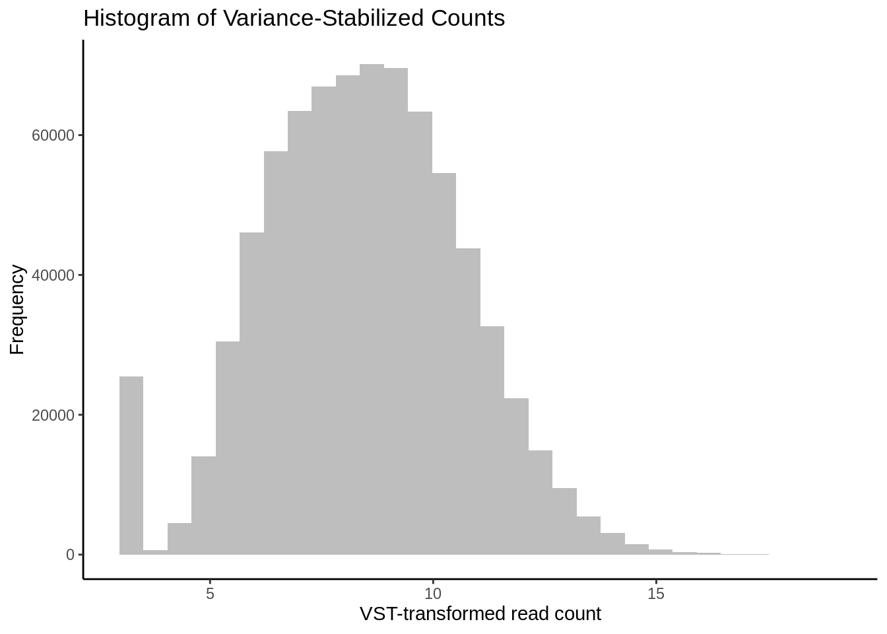
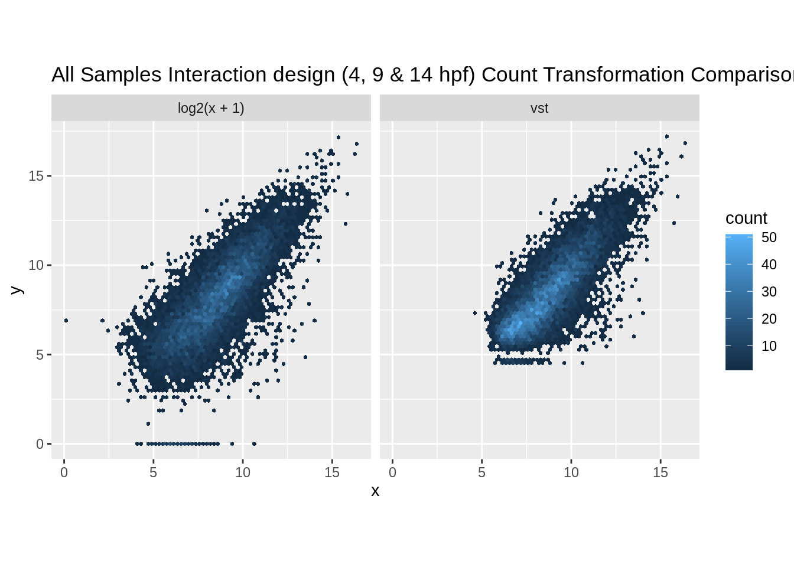
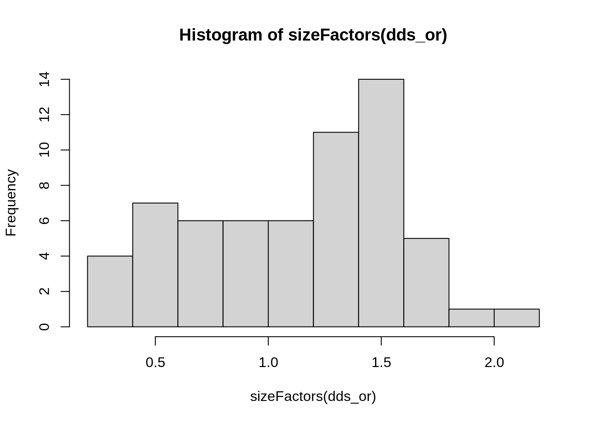
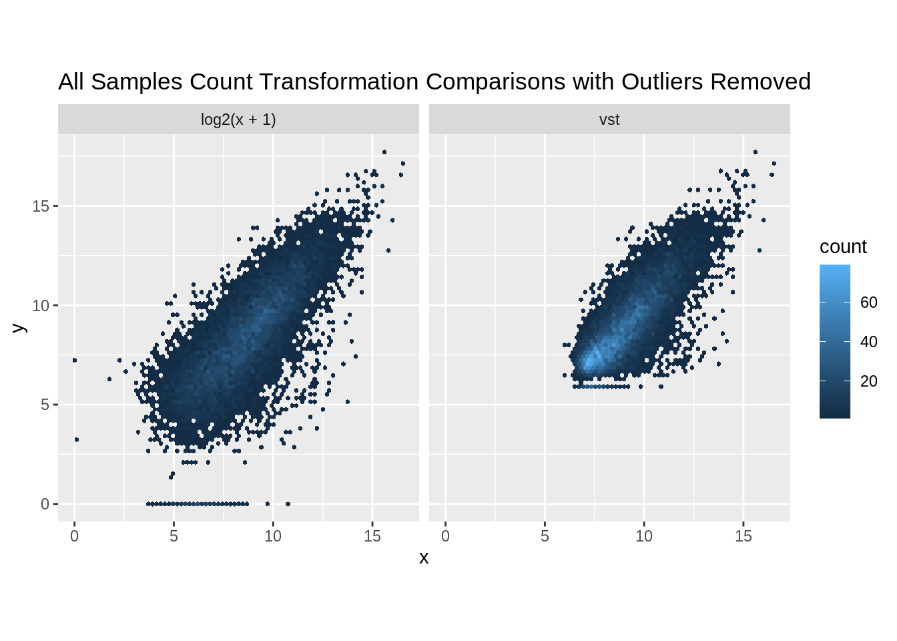
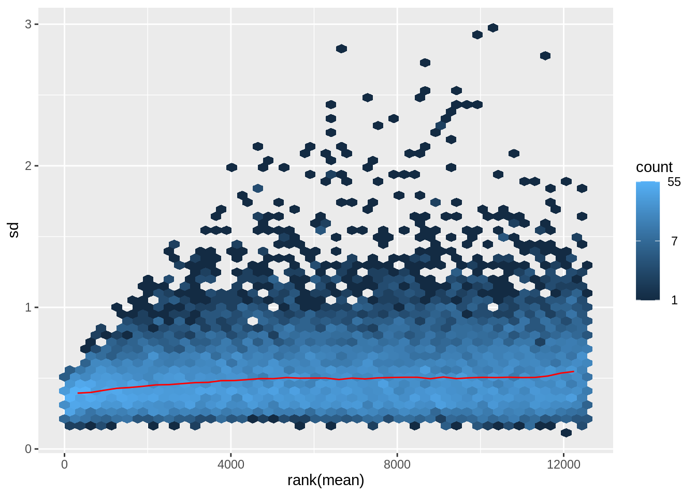

# Install pak itself if not already installed
if (!"pak" %in% rownames(installed.packages())) {
install.packages("pak")
}
# Use pak to install CRAN packages
pak::pak(c(
"tidyverse",
"viridis",
"pheatmap",
"vsn",
"plotly",
"mdscheuerell/flexoki"
))
# Install Bioconductor packages using pak (prefix with "bioc::")
pak::pak(c(
"bioc::DESeq2"
))Step 5: Initial Exploration of Count Matrix
Use DESeq2 and count transformations to perform exploratory data visualizations and identify any sample outliers
1 Background

2 Goals
Create initial DESeq Dataset Object to use in exploratory data visualizations
Identify & remove any outliers
2.1 Inputs
- unfiltered gene count matrix
2.2 Outputs
Outputs from this code file are to be found at output/05_explore - gcm_filtor.csv filtered gene count matrix with outlier samples removed - metadata_or.csvfiltered metadata removing outlier samples - pca.png exploratory principle component analysis (PCA) visualization - zscore_heatmap.png exploratory heatmap - sig_genes.csv44 significant genes that show an interaction between leachate and stage
Resources:
3 Setup
3.1 Install packages
3.2 Load packages
library(tidyverse)
library(viridis)
library(DESeq2)
library(vsn)
library(pheatmap)
library(plotly)
library(flexoki) 3.3 Load inputs
metadata and gene count matrix
metadata <- read.csv("../../metadata/metadata.csv")
# Make leachate and hpf factors
metadata$leachate <- as.factor(metadata$leachate)
metadata$leachate <- fct_relevel(metadata$leachate, "control", "low", "mid", "high")
metadata$hpf <- as.factor(metadata$hpf)
metadata$hpf <- fct_relevel(metadata$hpf, "4", "9", "14")
str(metadata)'data.frame': 63 obs. of 7 variables:
$ sample_id : chr "101112C14" "101112C4" "101112C9" "101112H14" ...
$ parents : int 101112 101112 101112 101112 101112 101112 101112 101112 101112 101112 ...
$ group : chr "C14" "C4" "C9" "H14" ...
$ hpf : Factor w/ 3 levels "4","9","14": 3 1 2 3 1 2 3 1 2 3 ...
$ embryonic_stage: chr "earlygastrula" "cleavage" "prawnchip" "earlygastrula" ...
$ leachate : Factor w/ 4 levels "control","low",..: 1 1 1 4 4 4 2 2 2 3 ...
$ leachate_mgL : num 0 0 0 1 1 1 0.01 0.01 0.01 0.1 ...gcm <- read.csv("../../output/04_count/gene_count_matrix.csv", row.names="gene_id", check.names = FALSE)4 Check order
From DESeq2 vignette under Count matrix input:
It is absolutely critical that the columns of the count matrix and the rows of the column data (information about samples) are in the same order. DESeq2 will not make guesses as to which column of the count matrix belongs to which row of the column data, these must be provided to DESeq2 already in consistent order.
Examine the count matrix and column data to see if they are consistent in terms of sample order. For our data, metadata contains sample information and gcm is our unfiltered gene count matrix.
all(metadata$sample_id == colnames(gcm))[1] TRUE
Note
Our samples are listed in the same order down our metadata rows and across our gcm columns
5 Filtering
5.0.1 Plot distribution of unfiltered reads
ggplot(data = data.frame(rowMeans(gcm)),
aes(x = rowMeans.gcm.)) +
geom_histogram(fill = "grey", binwidth = 5) +
xlim(0, 500) +
ylim(0, 5000) +
theme_classic() +
labs(title = "Distribution of unfiltered reads") +
labs(y = "Density", x = "Raw read counts",
title = "Read count distribution: untransformed, unnormalized, unfiltered")
Note
As you can see in the above plot, the raw distribution of all read counts takes on a left-skewed negative binomial distribution.
5.1 Pre-filtering
From the DESeq2 vignette on Pre-filtering:
While it is not necessary to pre-filter low count genes before running the DESeq2 functions, there are two reasons which make pre-filtering useful: by removing rows in which there are very few reads, we reduce the memory size of the
ddsdata object, and we increase the speed of count modeling within DESeq2. It can also improve visualizations, as features with no information for differential expression are not plotted in dispersion plots or MA-plots.Here we perform pre-filtering to keep only rows that have a count of at least 10 for a minimal number of samples. The count of 10 is a reasonable choice for bulk RNA-seq. A recommendation for the minimal number of samples is to specify the smallest group size, e.g. here there are 3 treated samples. If there are not discrete groups, one can use the minimal number of samples where non-zero counts would be considered interesting. One can also omit this step entirely and just rely on the independent filtering procedures available in
results(), either IHW or genefilter. See independent filtering section.
# Filter rows where at least 75% of the columns have a raw count of ~15
gcm_filt <- gcm %>%
filter(rowSums(across(everything(), ~ . > 15)) >= 0.75 * ncol(gcm))
nrow(gcm_filt)[1] 122296 Make DESeq Dataset Object
Create a DESeqDataSet design from the gene count matrix and treatment conditions. Here we set the design to test gene expression responses to pollution exposure (C, L, M, H) across developmental stage (4, 9, or 14 hours post fertilization).
From the DESeq2 vignette on The DESeqDataSet:
The object class used by the DESeq2 package to store the read counts and the intermediate estimated quantities during statistical analysis is the DESeqDataSet, which will usually be represented in the code here as an object
dds.A technical detail is that the DESeqDataSet class extends the RangedSummarizedExperiment class of the SummarizedExperiment package. The “Ranged” part refers to the fact that the rows of the assay data (here, the counts) can be associated with genomic ranges (the exons of genes). This association facilitates downstream exploration of results, making use of other Bioconductor packages’ range-based functionality (e.g. find the closest ChIP-seq peaks to the differentially expressed genes).
A DESeqDataSet object must have an associated design formula. The design formula expresses the variables which will be used in modeling. The formula should be a tilde (~) followed by the variables with plus signs between them (it will be coerced into an formula if it is not already). The design can be changed later, however then all differential analysis steps should be repeated, as the design formula is used to estimate the dispersions and to estimate the log2 fold changes of the model.
ImportantIn order to benefit from the default settings of the package, you should put the variable of interest at the end of the formula and make sure the control level is the first level.
From the RNA-seq-workflow
The simplest design formula for differential expression would be
~ condition, whereconditionis a column incolData(dds)that specifies which of two (or more groups) the samples belong to. For the airway experiment, we will specify~ cell + dexmeaning that we want to test for the effect of dexamethasone (dex) controlling for the effect of different cell line (cell). For running DESeq2 models, you can use R’s formula notation to express any fixed-effects experimental design. Note that DESeq2 uses the same formula notation as, for instance, the lm function of base R. If the research aim is to determine for which genes the effect of treatment is different across groups, then interaction terms can be included and tested using a design such as~ group + treatment + group:treatment. See the manual page for?resultsfor more examples.
#Set DESeq2 design for 2 factors and their interaction
dds <- DESeqDataSetFromMatrix(countData = gcm_filt,
colData = metadata,
design = ~ hpf + leachate + hpf:leachate)6.1 Plot distribution
# Extract VST-transformed expression matrix
vsd_mat <- assay(vst(dds))
# Flatten it into a vector
vsd_vals <- as.vector(vsd_mat)
# Create a dataframe for ggplot
df_vsd <- data.frame(vsd_count = vsd_vals)
# Plot
ggplot(df_vsd, aes(x = vsd_count)) +
geom_histogram(fill = "grey") +
theme_classic() +
labs(
title = "Histogram of Variance-Stabilized Counts",
x = "VST-transformed read count",
y = "Frequency"
)
Caution
This should look broadly like a normal distribution! If it doesn’t, make your filter stricter to remove more low reads. You can do this by increasing the percent of samples that have to have the minimum count, and/or increase the minimum count back in the pre-filtering step. VST compresses the high-end of the count distribution and expands the low-end, making the variance roughly constant across the range. The resulting values are on an approximate log2 scale but not exact log2(count + 1) — VST is more nuanced, especially for low counts. A range of 5 to 15 corresponds roughly to raw counts ranging from 2³² to 2¹⁵ ≈ 32 to 32,000, so it’s realistic for RNA-seq gene expression data.
6.2 Factor levels
From the DESeq2 vignette Note on factor levels:
By default, R will choose a reference level for factors based on alphabetical order. Then, if you never tell the DESeq2 functions which level you want to compare against (e.g. which level represents the control group), the comparisons will be based on the alphabetical order of the levels. There are two solutions: you can either explicitly tell results which comparison to make using the
contrastargument (this will be shown later), or you can explicitly set the factors levels. In order to see the change of reference levels reflected in the results names, you need to either runDESeqornbinomWaldTest/nbinomLRTafter the re-leveling operation.
Set levels for both the leachate and hpf variables
pvc_leachate_level(4 levels)controllowmidhigh
hpf(3 levels)4914
dds$leachate <- factor(dds$leachate, levels = c("control","low", "mid", "high"))
dds$hpf <- factor(dds$hpf, levels = c(4, 9, 14))
levels(dds$leachate)[1] "control" "low" "mid" "high" levels(dds$hpf)[1] "4" "9" "14"6.3 Count transformations
In order to test for differential expression, we operate on raw counts and use discrete distributions… However for visualization or clustering – it might be useful to work with transformed versions of the count data.
Which transformation to choose? The VST is much faster to compute and is less sensitive to high count outliers than the rlog. The rlog tends to work well on small datasets (n < 30), potentially outperforming the VST when there is a wide range of sequencing depth across samples (an order of magnitude difference). We therefore recommend the VST for medium-to-large datasets (n > 30). You can perform both transformations and compare the
meanSdPlotor PCA plots generated…
First we are going to log-transform the data using a variance stabilizing transforamtion (VST). This is only for visualization purposes. Essentially, this is roughly similar to putting the data on the log2 scale. It will deal with the sampling variability of low counts by calculating within-group variability (if blind=FALSE). Importantly, it does not use the design to remove variation in the data, and so can be used to examine if there may be any variability do to technical factors such as extraction batch effects.
To do this we first need to calculate the size factors of our samples. This is a rough estimate of how many reads each sample contains compared to the others. In order to use VST (the faster log2 transforming process) to log-transform our data, the size factors need to be less than 4. - A.Huffmyer Early Life History Energetics
dds <- estimateSizeFactors(dds)
hist(sizeFactors(dds))
all(sizeFactors(dds))<4[1] TRUE
Note
From DESeq vignette on Blind dispersion estimation.-,Blind%20dispersion%20estimation,-The%20two%20functions) :
The two functions, vst and rlog have an argument blind, for whether the transformation should be blind to the sample information specified by the design formula. When blind equals TRUE (the default), the functions will re-estimate the dispersions using only an intercept. This setting should be used in order to compare samples in a manner wholly unbiased by the information about experimental groups, for example to perform sample QA (quality assurance) as demonstrated below.
However, blind dispersion estimation is not the appropriate choice if one expects that many or the majority of genes (rows) will have large differences in counts which are explainable by the experimental design, and one wishes to transform the data for downstream analysis. In this case, using blind dispersion estimation will lead to large estimates of dispersion, as it attributes differences due to experimental design as unwanted noise, and will result in overly shrinking the transformed values towards each other. By setting blind to FALSE, the dispersions already estimated will be used to perform transformations, or if not present, they will be estimated using the current design formula. Note that only the fitted dispersion estimates from mean-dispersion trend line are used in the transformation (the global dependence of dispersion on mean for the entire experiment). So setting blind to FALSE is still for the most part not using the information about which samples were in which experimental group in applying the transformation.
We chose to set blind = FALSE because we expect large differences between embryonic stages (hpf).
vsd <- vst(dds, blind=FALSE)Effects of transformations on the variance
To show the effect of the transformation, in the figure below we plot the first sample against the second, first simply using the log2 function (after adding 1, to avoid taking the log of zero), and then using the VST and rlog-transformed values. For the log2 approach, we need to first estimate size factors to account for sequencing depth, and then specify
normalized=TRUE. Sequencing depth correction is done automatically for the vst and rlog.
The figures below plot the standard deviation of the transformed data, across samples, against the mean, using the shifted logarithm transformation, the regularized log transformation and the variance stabilizing transformation. The shifted logarithm has elevated standard deviation in the lower count range, and the regularized log to a lesser extent, while for the variance stabilized data the standard deviation is roughly constant along the whole dynamic range.
Note that the vertical axis in such plots is the square root of the variance over all samples, so including the variance due to the experimental conditions. While a flat curve of the square root of variance over the mean may seem like the goal of such transformations, this may be unreasonable in the case of datasets with many true differences due to the experimental conditions.
dds <- estimateSizeFactors(dds)
df <- bind_rows(
as.data.frame(log2(counts(dds, normalized=TRUE)[, 1:2]+1)) %>%
mutate(transformation = "log2(x + 1)"),
as.data.frame(assay(vsd)[, 1:2]) %>% mutate(transformation = "vst"))
colnames(df)[1:2] <- c("x", "y")
lvls <- c("log2(x + 1)", "vst")
df$transformation <- factor(df$transformation, levels=lvls)
ggplot(df, aes(x = x, y = y)) +
geom_hex(bins = 80) +
coord_fixed() +
facet_grid(. ~ transformation) +
ggtitle("All Samples Interaction design (4, 9 & 14 hpf) Count Transformation Comparisons")
meanSdPlot(assay(vsd))
7 Exploratory PCA
A principal components analysis (PCA) plot shows the samples in the 2D plane spanned by their first two principal components. This type of plot is useful for visualizing the overall effect of experimental covariates and batch effects.
# Get PCA data (top 500 DEGs by default)
pca_500 <- plotPCA(vsd, intgroup = "group", returnData = TRUE)
percentVar_500 <- round(100*attr(pca_500, "percentVar"))
# Merge with metadata
pca_500 <- merge(pca_500, metadata, by.x = "name", by.y = "sample_id", all.x = TRUE)
# Assign specific colors to each hpf
hpf_colors <- c(
"4" = flex("cyan", sat=500),
"9" = flex("green", sat =500),
"14" = flex("yellow", sat=500)
)
pca_500$label <- paste0("Sample: ", pca_500$sample_id,
"\nHPF: ", pca_500$hpf,
"\nLeachate: ", pca_500$leachate)
# Indicate leachate level by saturation (alpha)
leachate_alpha_map <- c("control" = 0.5, "low" = 0.6, "mid" = 0.7, "high" = 0.9)
pca_500$alpha_val <- leachate_alpha_map[pca_500$leachate]
# Original ggplot with a tooltip aesthetic
PCA_500 <- ggplot(pca_500, aes(PC1, PC2, color = hpf, label = name, alpha = alpha_val)) +
geom_point(size = 1, stroke = 1) +
ggtitle("M.cap embryos exposed to pvc leachate, top 500 most variable genes") +
xlab(paste0("PC1: ", percentVar_500[1], "% variance")) +
ylab(paste0("PC2: ", percentVar_500[2], "% variance")) +
coord_fixed() +
scale_color_manual(values = hpf_colors) +
stat_ellipse() +
guides(alpha = "none") + # hide alpha legend (optional)
theme_minimal()
# Convert to interactive plot
ggplotly(PCA_500, tooltip = "label")7.1 Identify outliers
… we usually identify any sample that falls outside the main group of samples by a magnitude (along PC1) of greater than 3 standard deviations. Mathematically, all that you need to do is convert your PC1 values to Z-scores and then check for those >|3|. In R, get these by using prcomp() and then accessing the ‘x’ variable of the returned object, e.g.,
pca <- prcomp(t(rna.data); pca$x… –Kevin Blighe on biostars forum
# Extract PC1 values
pca_scores <- pca_500[ , c("PC1", "PC2", "name")]
# Convert PC1 scores to Z-scores
pca_scores$zpc1 <- scale(pca_scores$PC1)
pca_scores$zpc2 <- scale(pca_scores$PC2)
# Get samples with Z-score > |3|
pc1_outliers <- pca_scores$zpc1[abs(pca_scores$zpc1) > 3]
pc2_outliers <- pca_scores$zpc2[abs(pca_scores$zpc1) > 3]
# Show them
pc1_outliersnumeric(0)pc2_outliersnumeric(0)
Important
Although their z-scores are not greater than 3 standard deviations from the group, visually samples 131415L4 and 789C4may be outliers in the cleavage phase, as they have the greatest spread from the centroid of hpf 4, and also from the rest of the samples. The hpf 4 data is expected to be the least consistent because at 4 hpf, the eggs were just on the cusp of beginning initial cleavage, meaning many of the embryos still appeared as an undivided blastocyle, and we could therefore not determine if the egg was fertilized and about to initiate cleavage, or unfertilized and inviable.
7.2 Remove the outliers
7.2.1 From metadata
metadata_or <- metadata %>%
filter(!(sample_id == "131415L4")) %>%
filter(!(sample_id == "789C4"))7.2.2 From gene count matrix
gcm_or <- gcm %>%
dplyr::select(-`131415L4`, -`789C4`)
nrow(gcm_or)[1] 543847.2.3 Refilter
# Filter rows where at least (3/60) = .05% of the columns have a value greater than 10
gcm_filtor <- gcm_or %>%
filter(rowSums(across(everything(), ~ . > 15)) >= 0.75 * ncol(gcm_or))
nrow(gcm_filtor)[1] 1256522634 genes (same genes present with or without outlier samples)
8 Remake DESeq Object
dds_or <- DESeqDataSetFromMatrix(countData = gcm_filtor,
colData = metadata_or,
design = ~ hpf + leachate + hpf:leachate)8.1 Redo count transformations
dds_or <- estimateSizeFactors(dds_or)
hist(sizeFactors(dds_or))
all(sizeFactors(dds_or))<4[1] TRUEvsd_or <- vst(dds_or, blind=FALSE)df <- bind_rows(
as_data_frame(log2(counts(dds_or, normalized=TRUE)[, 1:2]+1)) %>%
mutate(transformation = "log2(x + 1)"),
as_data_frame(assay(vsd_or)[, 1:2]) %>% mutate(transformation = "vst"))
colnames(df)[1:2] <- c("x", "y")
lvls <- c("log2(x + 1)", "vst")
df$transformation <- factor(df$transformation, levels=lvls)
ggplot(df, aes(x = x, y = y)) +
geom_hex(bins = 80) +
coord_fixed() +
facet_grid(. ~ transformation) +
ggtitle("All Samples Count Transformation Comparisons with Outliers Removed")
meanSdPlot(assay(vsd_or))
9 PCA
A principal components analysis (PCA) plot shows the samples in the 2D plane spanned by their first two principal components. This type of plot is useful for visualizing the overall effect of experimental covariates and batch effects.
# Get PCA data (top 500 DEGs by default)
pca_500 <- plotPCA(vsd_or, intgroup = "group", returnData = TRUE)
percentVar_500 <- round(100*attr(pca_500, "percentVar"))
# Merge with metadata
pca_500 <- merge(pca_500, metadata_or, by.x = "name", by.y = "sample_id", all.x = TRUE)
# Assign specific colors to each hpf
hpf_colors <- c(
"4" = flex("cyan", sat=500),
"9" = flex("green", sat =500),
"14" = flex("yellow", sat=500)
)
pca_500$label <- paste0("sample: ", pca_500$sample_id,
"\nHpf: ", pca_500$hpf,
"\nLeachate: ", pca_500$leachate)
# Indicate leachate level by saturation (alpha)
leachate_alpha_map <- c("control" = 0.5, "low" = 0.6, "mid" = 0.7, "high" = 0.9)
pca_500$alpha_val <- leachate_alpha_map[pca_500$leachate]
# Original ggplot with a tooltip aesthetic
PCA_500 <- ggplot(pca_500, aes(PC1, PC2, color = hpf, label = name, alpha = alpha_val)) +
geom_point(size = 1, stroke = 1) +
ggtitle("M.cap embryos exposed to pvc leachate, top 500 most variable genes") +
xlab(paste0("PC1: ", percentVar_500[1], "% variance")) +
ylab(paste0("PC2: ", percentVar_500[2], "% variance")) +
coord_fixed() +
scale_color_manual(values = hpf_colors) +
stat_ellipse() +
guides(alpha = "none") + # hide alpha legend (optional)
theme_minimal()
# Convert to interactive plot
ggplotly(PCA_500, tooltip = "label")# Original ggplot with a tooltip aesthetic
PCA_500 <- ggplot(pca_500, aes(PC1, PC2, color = hpf, label = name, alpha = alpha_val)) +
geom_point(size = 1, stroke = 1) +
ggtitle("M.cap embryos exposed to pvc leachate, top 500 most variable genes") +
xlab(paste0("PC1: ", percentVar_500[1], "% variance")) +
ylab(paste0("PC2: ", percentVar_500[2], "% variance")) +
coord_fixed() +
scale_color_manual(values = hpf_colors) +
stat_ellipse() +
guides(alpha = "none") + # hide alpha legend (optional)
theme_minimal()
PCA_500
ggsave("../../output/05_explore/pca.png", PCA_500, width = 16, height = 12, units="in", dpi = 600)10 Heatmap
Set themes and metadata.
# Extract the annotation dataframe
df <- as.data.frame(colData(vsd_or)[ , c("leachate", "hpf")])
legend_names_col = colnames(assay(vsd_or))
names(df)<- c("leachate", "hpf")
rownames(df) <- legend_names_col
# Specify colors
#leachate
# Assign specific colors to each hpf
leachate_colors <- c(
"control" = flex("blue", sat=400),
"low" = flex("magenta", sat =500),
"mid" = flex("magenta", sat=700),
"high" = flex("magenta", sat=950)
)
ann_colors = list(
leachate = leachate_colors,
hpf = hpf_colors
)
levels(df$leachate) [1] "control" "low" "mid" "high" levels(df$hpf)[1] "4" "9" "14"Plot heatmap of z-scores of differential expression.
# Make the matrix
mat <- assay(vsd_or)
png("../../output/05_explore/zscore_heatmap.png", width = 8, height = 6, units = "in", res = 600)
pheatmap(
mat,
cluster_rows=TRUE,
show_rownames=FALSE,
color=inferno(10),
show_colnames=FALSE,
fontsize_row=3,
scale="row",
cluster_cols=TRUE,
annotation_col=df,
annotation_colors = ann_colors,
labels_col=legend_names_col,
clustering_distance_rows = "euclidean",
clustering_distance_cols = "euclidean",
cutree_rows = 3)
dev.off()png
3 
11 Results
dds_lrt <- DESeq(dds_or, test = "LRT", reduced = ~ hpf + leachate)
res_lrt <- results(dds_lrt, alpha = 0.05)summary(res_lrt)
out of 12565 with nonzero total read count
adjusted p-value < 0.05
LFC > 0 (up) : 28, 0.22%
LFC < 0 (down) : 16, 0.13%
outliers [1] : 0, 0%
low counts [2] : 0, 0%
(mean count < 23)
[1] see 'cooksCutoff' argument of ?results
[2] see 'independentFiltering' argument of ?results11.1 Significant genes
sig_genes <- res_lrt %>%
as.data.frame() %>%
filter(padj < 0.05)
write.csv(sig_genes, "../../output/05_explore/sig_genes.csv")12 Summary & Next Steps
We can see both via the PCA and the heatmap that our data groups largely by stage, aka hours post fertilization (hpf). Any effects of leachate are going to be very subtle in comparison to the differential expression due to stage. Initially, we found 44 genes significant genes (padj < 0.05) whose response to leachate exposure depends on developmental stage.
Note
It’s important to note that the LRT test statistic is only informing on significance of genes where the leachate effect changes across embryonic stage (hpf)!
Next we are going to dive into the results of the DESeq2 likelihood ratio test to further interpret the interaction term in our design (~ hpf + leachate + hpf:leachate)
We also aim to:
Characterize effects of
leachate(separate from the interaction betweenleachateand stage)Characterize the effect of
hpfon gene expression to put theleachateeffects into stage-specific contextLook for non-monotonic (aka non-linear) responses (are there non-linear effects of
leachate, as we hypothesized we would see if PVCleachateis following a common endocrine disrupting pattern?)
# save gene count matrix
gcm_filtor_rownames <- gcm_filtor %>%
rownames_to_column(var = "gene_id")
write.csv(gcm_filtor_rownames, file = "../../output/05_explore/gcm_filtor.csv")
# output metadata for other analyses
write_csv(metadata_or, "../../metadata/metadata_or.csv")Color schemes for data visualizations to carry through the remaining analysis steps:
pak::pak("mdscheuerell/flexoki") # installs flexoki
library(flexoki) # load the version from mdscheuerell
# Specify colors
# Assign specific colors to each hpf
hpf_colors <- c(
"4" = flex("cyan", sat=500),
"9" = flex("green", sat =500),
"14" = flex("yellow", sat=500)
)
# Assign specific colors to each leachate level
leachate_colors <- c(
"control" = flex("blue", sat=400),
"low" = flex("magenta", sat =500),
"mid" = flex("magenta", sat=700),
"high" = flex("magenta", sat=950)
)
# Annotation colors for pheatmap
ann_colors = list(
leachate = leachate_colors,
hpf = hpf_colors
)
# Indicate leachate level by saturation (alpha)
leachate_alpha_map <- c("control" = 0.5, "low" = 0.6, "mid" = 0.7, "high" = 0.9)
pca_500$alpha_val <- leachate_alpha_map[pca_500$leachate]